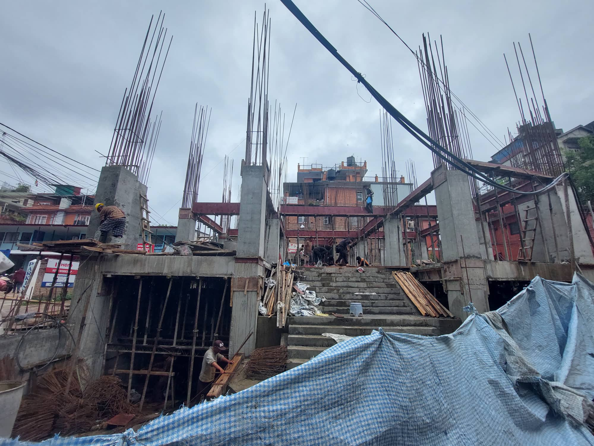
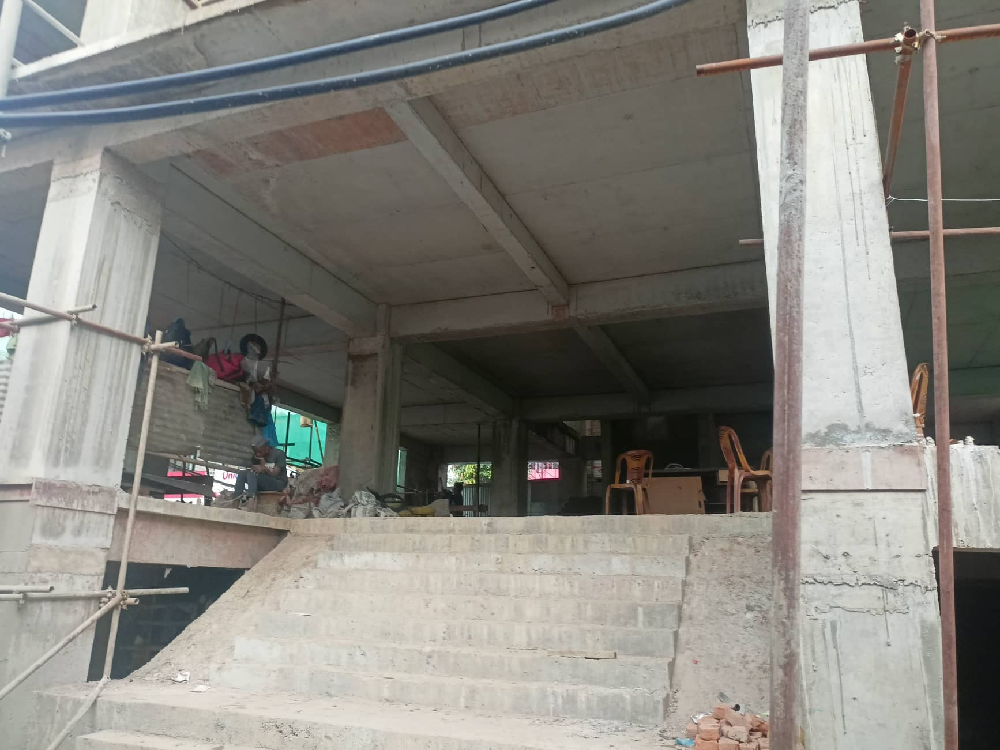

This project involved designing and analyzing a multi-storeyed commercial building using tools such as AutoCAD and ETABS. My role focused on ensuring structural stability, load distribution optimization, and adhering to safety standards.
I worked closely on structural calculations and simulations to ensure the project met all regulatory guidelines. This experience enhanced my technical design and analysis skills.


